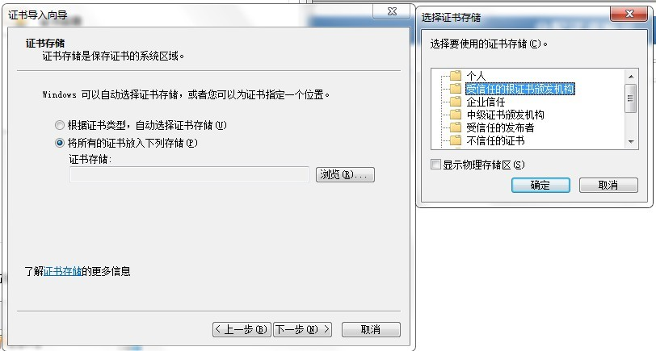

| 安装成功后，如打印机正常走纸，则控件安装成功。 | ||
| 点此，如自动安装失败，请按以下方法手动安装。 |
| 如自动安装失败，请按以下方法手动安装： |
| 1:右击“smsx6.5",另存为，下载后双击安装。 |
| 2:右击“root.cer" ,另存为，下载后双击安装。 |
| 3:右击“scriptx.reg" ,另存为，下载后双击安装。 |
| 若打印证书时需指定打印某一页证书，请安装版本7，方法同上。请先安装上诉三个文件后，再安装版本7“smsx7" |
| 注1：安装时请先退出360安全卫士，360杀毒软件。否则有可能认为是病毒。该文件非病毒，请放心安装。 |
| 注2：请右击文件名，“另存为”下载文件后手动安装。如需安装版本7，请先安装6.5，否则安装失败。 |
| 注3：安装过程中所有提示选择“是”或“YES”。 |
| 注4：使用IE9及以上级别浏览器时，手动安装第二步时，安装至如下图所示界面时，请按图示选择操作。 |
|  |